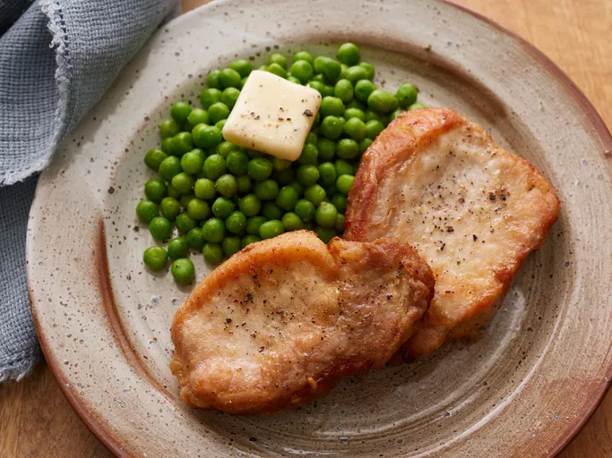

Home
Fried Pork Chops

Ingredients
- 1 cup vegetable oil for frying
- 1/2 cup all-purpose flour
- 1/2 teaspoon seasoning salt, or to taste
- salt and pepper to taste
- 4 3/4 inch thick pork chops
Steps
- Heat oil in a skillet
- Combine flour, season salt, salt
and pepper in a paper or plastic bag
- Place pork chops in the bag and shake
to coat. Shake off excess flour
- Fry chops in hot oil until golden on the outside
and juices run clear, 4 to 5 minutes per side
- Serve hot and enjoy!